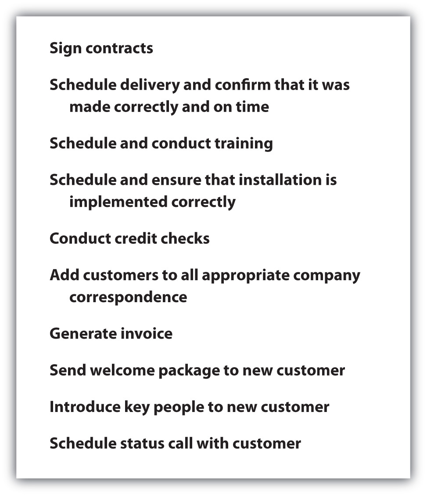

You have spending power, and lots of it. Millennials (or Gen Y, if you prefer) are estimated to have over $1.3 trillion in direct spending for apparel, food, music, entertainment, and other products and services. That number is understated due to the influence you have on parents and other older people who seek your tech-savvy advice on all types of products from computers to cars.Sarah Littman, “Welcome to the New Millenials,” Response Magazine, May 1, 2008, http://www.responsemagazine.com/response-magazine/welcome-new-millenials-1192 (accessed November 25, 2009). You are one of the most sought-after consumer groups around. More sales and marketing efforts are aimed at you than at any other generation. You determine where and when you will spend your money. You have the power.
So what is it that makes you decide to choose Nintendo over Xbox, Mini Cooper over Chrysler, or Apple over Toshiba? Of course, the product has a lot to do with your choice. Price is certainly a consideration, but you don’t always buy the lowest-priced product or service. Think about it. It’s the ongoing relationship you have with the brand that makes a difference. It’s the fact that the company continues to serve up exactly the new products and services you need (how do they do that?). It’s how the company keeps in touch on Facebook and other ways that keeps you engaged in the conversation. And it’s the fact that you feel appreciated as a customer. When a company makes you feel like they forgot about you, it’s time to move on and spend your money elsewhere.
Follow-up entails everything that takes place after the sale is closed from getting signatures on all contracts and paperwork to scheduling delivery. It also includes your ongoing relationship with your customer. Relationship is the key word here. If you were involved in transactional selling, only focused on making the short-term sale, you would not be worried about follow-up because someone else in your company would take care of it. You would move on to the next customer. In many retail selling environments, this may be the case. You would not expect to receive a thank-you note from the checker at the grocery store or the cashier at a fast-food restaurant. However, you would expect to hear from a real estate agent who sold you a new home, or from a financial services consultant who is managing your money.
It’s the attention to detail to be sure that your transaction goes smoothly that you rely on your salesperson to do. Think about how you feel when your salesperson adds value to your new investment with additional information and insights. That makes you feel like a valuable customer. Chances are, when you need something else (another house or more money to invest), the first person you will call will be the salesperson who continues to follow up with you. When one of your friends wants to buy a house or invest some money, you will be very likely to go out of your way to recommend your salesperson.
While the specific follow-up activities may vary from company to company and even customer to customer, Figure 13.1 "Areas That Require Follow-Up" provides a summary of some of the most common follow-up actions that are expected. Many companies have a checklist or best practices that are used as guidelines to ensure that all details are covered. In the case of complex sales, follow-up may include a transition team with members from both the company and the customer. The transition team may work closely together, including weekly or in some cases daily status calls, to ensure that the transition to the new product or service goes smoothly. For example, the implementation of a new logistics system or software program may require that the old system runs parallel with the new system until all aspects are completely set up and appropriate training is conducted. This is especially true for products or services like these that have a direct impact on the operation of the customer’s business.
Figure 13.1 Areas That Require Follow-Up
No matter what product or service you are selling, the sales process can be challenging. The selling process starts with prospecting and qualifying (that was six chapters ago!). Depending on the complexity and buying cycle of the product or service, it could takes weeks, months, or even years until you close the sale. In fact, 81 percent of all sales happen on or after the fifth sales call, according to study conducted by the Association of Sales Executives.David Frey, “Follow-up Marketing: How to Win More Sales with Less Effort,” Marketing Best Practices, http://www.marketingbestpractices.com/Articles/FollowUpMarketing.htm (accessed November 22, 2009). It takes time, energy, and commitment to get to the point where the deal is done. Some salespeople spend all their time and effort to research the prospect, get the appointment, make the presentation, handle objections, and close the sale—and then expect to collect their commission check. They seem to literally disappear after the sale is completed.Jeff Schmitt, “The Personal Touch: Make the Sale…after the Sale,” Sales & Marketing Management, September 9, 2009, http://www.salesandmarketing.com/article/personal-touch-making-salex2026after-sale (accessed November 23, 2009).
Relationship selling doesn’t work that way. The relationship really begins with the close of the sale; follow-up is what makes a relationship grow and prosper. Follow-up is how most customers evaluate the performance of the product or service they just bought. As you may recall from Chapter 1 "The Power to Get What You Want in Life", you are the brand to the customer. How you proactively handle follow-ups will make all the difference in your relationships and your sales. In other words, the best way to make the sale is by the way you handle things after the sale.
Here’s the not-so-subtle point here. Even though the sale is closed, you should never assume the sale is closed.Jeff Schmitt, “The Personal Touch: Make the Sale…after the Sale,” Sales & Marketing Management, September 9, 2009, http://www.salesandmarketing.com/article/personal-touch-making-salex2026after-sale (accessed November 23, 2009). This is especially important when there is a gap in time between the closing of the sale and the delivery of the product or service (as in the delivery of a major software package, installation of new equipment, or bringing on board a new product or service vendor). A customer can have second thoughts, sometimes called buyer’s remorse or cognitive dissonance (covered in detail in Chapter 6 "Why and How People Buy: The Power of Understanding the Customer"). This is when a customer may think that the decision she made is not the right one. She may be in contact with a competitor, receive additional information, or be concerned that she made the wrong decision, paid too much, or didn’t consider some alternatives properly. You can help avoid letting your customers be vulnerable to alternatives.Jeff Schmitt, “The Personal Touch: Make the Sale…after the Sale,” Sales & Marketing Management, September 9, 2009, http://www.salesandmarketing.com/article/personal-touch-making-salex2026after-sale (accessed November 23, 2009).,Joan Leotta, “When Buyers Change, Grin and Sell It,” Selling Power 21, no. 5, http://www.sellingpower.com/content/article.php?a=5769 (accessed March 16, 2010). Increase your return on your time investment and your customer’s return on her financial investment and put your follow-up plan into place immediately.
Put together your follow-up plan even before you begin your prospecting efforts. While follow-up is the last step in the selling process, it is the step that can have the most impact on your customer. You worked hard to establish trust with your customer during the selling process. After the sale is the time to put that trust to work and continue to earn it every day. Lip service, saying that you’ll do something but not really putting in the effort to do it, doesn’t go very far in sales. And just going through the motions will put you farther behind. It may seem more exciting to be working on a new proposal rather than doing follow-up for a sale that has already closed.
Think about your follow-up plan with the following five elements in mind:
1. Demonstrate your personal commitment and connection to the customer. Start by saying thank you to your customer for her business. “Customers want to know you care about them, their business, their challenges, and them as individuals,” according to author and professional speaker George Hedley. “The number one reason customers stop doing business with a company is an attitude of indifference,” he says.George Hedley, “Customer Care = Cash,” American Salesman, March 2009, http://www.hardhatpresentations.com/CustomerCareCash.htm (accessed March 16, 2010). How you follow up after the sale is a good indication of how you will respond throughout the relationship.
Start off on the right foot by sending a thank-you letter. Everyone likes to feel appreciated, especially right after they have made a commitment to spend money. Your letter should be professional, yet personal, and sincere. This is the perfect opportunity to reinforce to the customer that she has made a wise decision; this is a perfect opportunity to reiterate the product or service benefits with a focus on the information you learned about the customer’s business during the selling process.Dana Ray, “Phenomenal Follow-up,” Selling Power 19, no. 6, http://www.sellingpower.com/content/article.php?a=5081 (accessed March 16, 2010).,Joan Leotta, “When Buyers Change, Grin and Sell It,” Selling Power 21, no. 5, http://www.sellingpower.com/content/article.php?a=5769 (accessed March 16, 2010).
Besides demonstrating good business etiquette, a personal thank-you letter also serves some operational objectives. It should include your contact information, phone numbers, e-mail address, Web sites for customer contact (in addition to your contact information), receipt or order confirmation, and a list of next steps.Joan Leotta, “When Buyers Change, Grin and Sell It,” Selling Power 21, no. 5, http://www.sellingpower.com/content/article.php?a=5769 (accessed March 16, 2010).
Don’t just say thank you after you close the sale. Be ready to follow up with three to five “selling points” timed after the sale. For example, after a salesperson sells a car, she follows up with an article about a safety award that the brand was awarded. She also sends a birthday card to the customer with a note to indicate the value of the car has increased based on current market conditions.Sean McPheat, “Post Sales Follow Up,” Master of the Sales Force Blog, http://www.mtdsalestraining.com/mtdblog/post-sales-follow-up.html (accessed November 23, 2009).
Most of all show your customers that you appreciate them and their business regularly with a handwritten thank-you note, an unexpected visit, or small gift like a box of candy. Little gestures go a long way; they are like “one-a-day vitamins” for your business.George Hedley, “Customer Care = Cash,” American Salesman, March 2009, http://www.hardhatpresentations.com/CustomerCareCash.htm (accessed March 16, 2010).
Follow-Up Letter
(click to see video)Looking for tips about how to write a sales follow-up letter? This video includes some great tips.
So what if you didn’t get the sale? Send a thank-you note anyway. It’s a professional way to set yourself apart and keep the door open for future conversations. A personal thank-you note or letter really stands out in today’s fast-paced world. You might be surprised where a thank-you note or letter can lead. See a sample thank-you letter.
2. Deliver as promised. While you are the person on the front line with the customer, you have a team of people who are responsible for delivering the product or service as specified. “Don’t just check the box,” says executive coach and author Marshall Goldsmith.Marshall Goldsmith, “Don’t Just Check the Box,” Fast Company, February 1, 2005, http://www.fastcompany.com/magazine/91/mgoldsmith.html (accessed November 23, 2009). Take the time to follow up internally to be sure all the i’s are dotted and t’s are crossed so that your customer’s delivery is flawless. That means taking the time to share details and insights about the customer’s business and preferences with your entire team (whether your team is large or small). When salespeople just fill out the forms to get things moving internally, there’s a high likelihood that some nuances can fall between the cracks. Keep in mind that your customer made the purchase because you can deliver consistently for her, but you can’t deliver the product or service alone. There are most likely internal processes for communication and delivery, contracts to be signed, schedules to be communicated, and other operational activities that require the entire team to be working in harmony. Follow the internal processes and go a step farther. Make your coworkers care as much about delivering consistently for the customer as you do; take the time to share information about the customer that goes above and beyond your internal forms. You’ll also be surprised to see that everyone involved will add value when each has a connection to the customer. And don’t forget to say thank you to your team. You couldn’t do it without them; share the positive feedback from your customer with the team.Jeff Schmitt, “The Personal Touch: Make the Sale…after the Sale,” Sales & Marketing Management, September 9, 2009, http://www.salesandmarketing.com/article/personal-touch-making-salex2026after-sale (accessed November 23, 2009).
Call the customer to be sure the delivery was made as promised and everything is to the customer’s liking.Kelley Robertson, “The Power of Follow Up,” About.com, http://entrepreneurs.about.com/od/salesmarketing/a/poweroffollowup.htm (accessed November 23, 2009).
3. Add value to your customer’s business. Follow-up isn’t a one-time event. Rather, it is an ongoing process that takes place after the sale is closed. Just like when you researched, asked questions, and listened to your customer to learn as much as possible about you might solve his business challenges before he made the commitment to buy, you want to continue to do the same thing as part of your ongoing follow-up.
Build your credibility by creating a systematic follow-up system so that your customer knows he can count on hearing from you regularly. You might touch base in person or by phone, e-mail, text, or a combination of these contact methods. The key is to communicate regularly in the manner or manners in which your customer prefers. It’s a good idea to get into a routine to get and give status updates.Dana Ray, “Phenomenal Follow-up,” Selling Power 19, no. 6, http://www.sellingpower.com/content/article.php?a=5081 (accessed March 16, 2010).,Jeff Schmitt, “The Personal Touch: Make the Sale…after the Sale,” Sales & Marketing Management, September 9, 2009, http://www.salesandmarketing.com/article/personal-touch-making-salex2026after-sale (accessed November 23, 2009). Believe it or not, some salespeople actually forget to follow up.Kelley Robertson, “The Power of Follow Up,” About.com, http://entrepreneurs.about.com/od/salesmarketing/a/poweroffollowup.htm (accessed November 23, 2009). They get so busy with making new proposals and putting out fires that they lose track of time and details.
What’s important to the customer should be important to you so make yourself easily accessible and respond to his inquiries in a timely manner.Dana Ray, “Phenomenal Follow-up,” Selling Power 19, no. 6, http://www.sellingpower.com/content/article.php?a=5081 (accessed March 16, 2010). Deliver the same energy, enthusiasm, and level of service you did before you closed the sale. And just as you did when you were working to close the business, be honest about timing and resolution of issues. In other words, set expectations and then overdeliver on them.Jeff Schmitt, “The Personal Touch: Make the Sale…after the Sale,” Sales & Marketing Management, September 9, 2009, http://www.salesandmarketing.com/article/personal-touch-making-salex2026after-sale (accessed November 23, 2009).
Adding value goes beyond the typical “I’m just checking in.” Every time you contact your customer, offer some insight, news, or expertise to help him and his business. Make yourself the trusted advisor and key collaborator. Provide insights from industry events, forward copies of relevant white papers, make introductions to subject matter experts in your company, and send company (or your own) newsletters. You can complement your personal follow-up with the Internet to provide valuable updates and networking connections through a blog, Twitter updates, LinkedIn discussions, and other social networking tools. All these types of communications help add value to your customer’s business so that when she has a problem (any problem), you deliver so much value that she calls you first to help her solve it. This is how you earn your seat at the table as a true business partner, not a salesperson.Jeff Schmitt, “The Personal Touch: Make the Sale…after the Sale,” Sales & Marketing Management, September 9, 2009, http://www.salesandmarketing.com/article/personal-touch-making-salex2026after-sale (accessed November 23, 2009).
4. Get feedback. It’s not enough to talk to your customers; it’s also important to listen.Tamara Monosoff, “Focus on Core Customers,” Entrepreneur, October 21, 2009, http://www.entrepreneur.com/article/printthis/203774.html (accessed November 23, 2009). Ask for their input, insight, and ideas about everything from things you can do better to new products and services. Customers, especially those with whom you have good relationships, can provide invaluable guidance to you and your company. One-on-one planning meetings, product development meetings, and other forward-looking events are ideal ways of gaining firsthand feedback and getting buy-in from the start. There’s nothing that your customer would rather talk about than his business. Be genuine and ask him about it, then listen and use the information to help his business (and yours) grow.George Hedley, “Customer Care = Cash,” American Salesman, March 2009, http://www.hardhatpresentations.com/CustomerCareCash.htm (accessed March 16, 2010).
IdeaStorm (http://www.ideastorm.com) is a Web site created by Dell that literally turns customer feedback into a social network. You can post, vote, promote, or demote ideas for Dell. What makes this Web site so unique is that you can actually see the ideas that have been put into action. Talk about showing customers you care about what they think, Dell puts customer feedback to good use.Alister Cameron, “Dell IdeaStorm—Ultimate Customer Feedback Example,” WebProNews, February 27, 2007, http://www.webpronews.com/blogtalk/2007/02/27/dell-ideastorm-the-ultimate-customer-feedback-example (accessed November 23, 2009).
Starbucks has incorporated MyStarbucksIdea into its Web site as a place for customers to share their ideas, vote on their favorites, discuss the pros and cons, and see the actions that have been taken as a result.Starbucks, http://mystarbucksidea.force.com (accessed November 24, 2009). Suggest an idea at http://mystarbucksidea.force.com.
5. Make your customers into fans. Focusing on your customers’ businesses as if they were yours, adding value, and showing your customers that you appreciate their business makes them more than customers—it makes them fans. Fans share stories of their great experiences. Your customers can help you sell with testimonials, referrals, and references. One of the most effective ways to handle objections from prospects is to call on excited and energized customers who are more than satisfied with your product and service. There are no more powerful words to win over a new prospect than those of a more-than-satisfied customer.Jeffrey Gitomer, “Objection Prevention & Objection Cure,” video, May 18, 2009, http://www.youtube.com/watch?v=CgfmcuE_06w (accessed November 24, 2009). Use customer testimonials as part of your selling presentation, on your company’s Web site, and on your professional Web site and social networking pages. In fact, it’s a good idea to ask customers to write a recommendation for you on LinkedIn.
Referrals Build Sales
See how testimonials are used by Atlanta REMAX real estate agent Ellen Crawford on her professional Web site.
Reward your best customers with special offers and added value such as additional training, additional advertising space or time, or other additional service.Jeff Schmitt, “The Personal Touch: Make the Sale…after the Sale,” Sales & Marketing Management, September 9, 2009, http://www.salesandmarketing.com/article/personal-touch-making-salex2026after-sale (accessed November 23, 2009). While you may extend a special pricing offer, focus on delivering value and giving your best customers the opportunity to experience the other services you have to offer. This lets your best customers know you appreciate their business and gives you an opportunity to move your relationship to the next level by becoming an even more important business partner to them.
It is these loyal customers who build your business in two ways. First, they buy more from you because they feel that you are bringing them value in more ways than simply selling a product. Second, when they are loyal customers, they become fans or advocates of your product or service, and they tell their friends about you.
The Making of a Fan—Yahoo!-Style
Blogger Michael Eisenberg went from a detractor to a promoter of Yahoo! with one e-mail. Eisenberg made a “not-so-flattering post” about the functionality of what was then the new MyYahoo! in March 2007. Within twenty-four hours he received an e-mail from the manager of Yahoo!’s Front Doors Group that said, “I would love to find out what you would like to see and which features you are most concerned about losing. We want to be sure that our heavy users remain satisfied. If you have a few minutes to e-mail me, I’d very much appreciate it.” Eisenberg promptly posted the response from the Yahoo! manager on his blog along with his fanatic endorsement of the company that can be summed up in one word: “Kudos!”Michael Eisenberg, “Yahoo!—Great Customer Feedback Loop,” March 13, 2007, http://sixkidsandafulltimejob.blogspot.com/2007/03/yahoo-great-customer-feedback-loop.html (accessed November 19, 2009).
No matter how good you and your company are at taking care of customers, there will be a time when something doesn’t go as planned or as your customer expected. When you experience a setback, your mettle is put to the test. “Errors are inevitable, dissatisfied customers are not.”Chia-Chi Chang, “When Service Fails: The Role of the Salesperson and the Customer,” Psychology & Marketing 23, no. 3 (March 2006): 204. It’s not about the fact that the problem occurred; it’s how you respond that matters. When a salesperson responds quickly to a service failure and delights the customer with the outcome, it is called heroic recoveryResponse to a service failure that delights the customer.. The salesperson has the opportunity to perform a “heroic” action to save the customer’s business. For example, when a food service distributor sales rep personally delivers a case of ground beef that was missing from the truck earlier in the morning to a restaurant before lunch, he goes above and beyond to demonstrate service and help the customer avoid missed lunch sales.
In some cases, heroic recovery can improve a customer’s perception of the quality of service provided by a salesperson. Some customers actually rate companies higher when there has been a service failure and it has been corrected quickly than if there was no service failure at all. In addition, service failures can ultimately help identify service issues that are important to the customer. For example, an industrial packing company had an internal service standard of shipping 95 percent of all orders complete. This had a negative impact on the company’s ability to make deliveries within seventy-two hours, which is the industry average. After conducting focus groups, the company learned that customers valued complete shipments more than the seventy-two-hour delivery window. The company has since changed its policies and has created a competitive advantage based on service that is important to the customer.Gabriel R. Gonzalez, K. Douglas Hoffman, and Thomas N. Ingram, “Improving Relationship Selling Through Failure Analysis and Recovery Efforts: A Framework and Call to Action,” Journal of Personal Selling & Sales Management 25, no. 1 (Winter 2005): 58.
This is not to imply that a constant state of heroic recovery is acceptable to a customer. In fact, providing excellent service begins with understanding what the customer values and then having internal operations in place to be able to consistently deliver that level of service. Recall from Chapter 1 "The Power to Get What You Want in Life" that consistency is one of the elements of a brand. If you as a salesperson, or your company, can consistently deliver on a service promise, then heroic recovery is not efficient or effective in servicing the customer or creating a loyal customer.
Part of heroic recovery includes taking care of the customer—whatever it takes to make the impact of the service failure right for the customer. In addition, it includes internal analysis to identify where and why the service failure occurred, what it takes to correct the problem, and how to prevent it from happening again. As a salesperson, you want to be able to recover from a service failure with confidence so that you know the root cause of the problem has been fixed.
Inspiration from Air Conditioning
Said Hilal, CEO of Applied Medical Resources, owned one of the early Mercedes S series and was happy with the performance of the car. After one year, Mercedes notified him that the air conditioner was appropriate for Europe but was underpowered for the United States and offered to replace the air conditioner. Hilal was so impressed with how Mercedes proactively handled the issue that he decided to use the same approach to his business. “We ask our customers what they want to see in our future product—what problems they have that we can help resolve,” says Hilal. “We consistently remind ourselves to listen to what the customer needs, not what we need.”Ilan Mochari, “What You Learn on the Other Side,” Inc., November 1, 2002, http://www.inc.com/magazine/20021101/24833.html (accessed November 23, 2009).
The bottom line is that companies and salespeople should view heroic recovery efforts as an investment in customer service perceptions, rather than as a cost. If handled properly, service failures can improve a relationship with a customer even more so than excellent service.Gabriel R. Gonzalez, K. Douglas Hoffman, and Thomas N. Ingram, “Improving Relationship Selling through Failure Analysis and Recovery Efforts: A Framework and Call to Action,” Journal of Personal Selling & Sales Management 25, no. 1 (Winter 2005): 58.
Assume you sell landscaping to businesses. Once you have arranged for the landscaping to be installed, are there any other opportunities for follow-up?